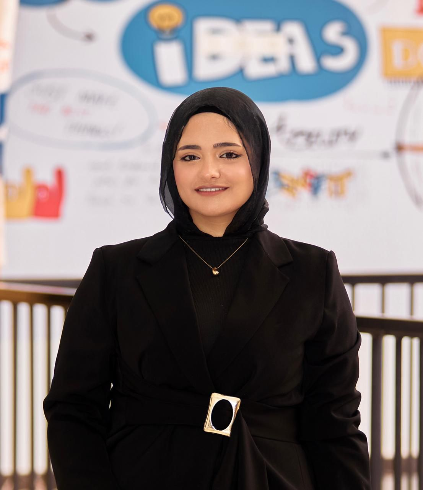

Haneen Ahmed Hamdy Elasawy |

My personal info:
My name is Haneen Ahmed Hamdy Elasawy. I am a passionate learner who loves technology and continuous self-development. I enjoy working on myself, learning new skills, and improving every day. I am interested in programming, problem solving, and discovering how things work behind the scenes. I always try to challenge myself and take new steps toward my goals. |
|
My Social Profile
|
Copyrights © are reserved to ITI.